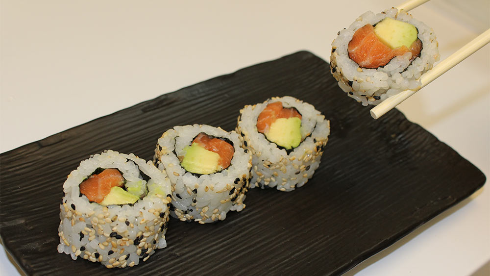

Salmon Avocado Uramaki Recipe

Description
These Japanese smoked salmon rolls are a type of sushi known as uramaki which translates from the Japanese as "inside out rolls".
They are an easy fish sushi roll to make at home for lunch. The following recipe makes 8 portions.
Ingredients
- 5 small avocado slices
- 5 mini gherkins (or cornichons)
- 1 nori sheet
- 200g cooked sushi rice
- ½ tsp wasabi paste
- 2 tsp cream cheese
- 150g smoked salmon
- 2 tsp wild salmon caviar
- 1½ radishes, thinly sliced
- A few sprigs of dill
- Pickled ginger
- Wasabi paste
- Kikkoman Naturally Brewed Soy Sauce
Steps
- Cut avocado and gherkins into strips.
- Place 1 nori sheet on the sushi mat.
- Spread the sushi rice on it with wet fingers.
- Turn over completely.
- Spread wasabi paste and cream cheese lengthwise along the middle.
- Place avocado and gherkins strips lengthwise on top.
- Roll up the roll.
- Top with salmon strips.
- Wrap in cling film and fix with sushi mat.
- Carefully remove the cling film and cut the roll into 8 equal pieces.
- Arrange with wild salmon caviar, radish slices, dill, pickled ginger and wasabi paste.